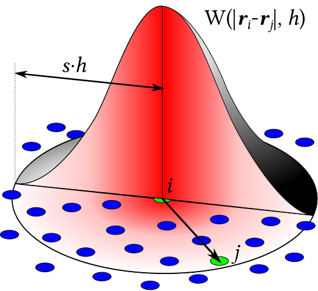

光滑粒子流体动力学SPH
目标
- 理解SPH的思想和计算过程
- 代码与解释（施工中...）
SPH离散化的思想
光滑粒子流体动力学（SPH）的概念中，粒子携带两样东西来模拟连续的场：
- 物理量
- 核函数\(W\)
下式中，\(A\)可以任意空间分布的物理属性，例如密度、压力等等
\(A(x)=\displaystyle\sum_iA_i\frac{m_i}{\rho_i}W(\mid\mid\textbf{X}-\textbf{X}_j\mid\mid_2,h)\quad(1)\)

周围粒子的物理量，接近中间粒子的贡献越多，反之越小。
例如对一个粒子力的加权：
\(f(r)=f(r)=\displaystyle\sum_jf(r_j)\frac{m_j}{\rho_j}W(\mid\mid\textbf{r}-\textbf{r}_j\mid\mid_2,h)\)
SPH的空间积分只与核函数相关：
\(\nabla f(r)\approx\displaystyle\sum_jf(r_j)\frac{m_j}{\rho_j}\nabla W(\mid\mid\textbf{r}-\textbf{r}_j\mid\mid_2,h)\)
\(\nabla\cdot \textbf{F}(r)\approx\displaystyle\sum_j\textbf{F}(r_j)\frac{m_j}{\rho_j}\nabla\cdot W(\mid\mid\textbf{r}-\textbf{r}_j\mid\mid_2,h)\)
\(\nabla\times \textbf{F}(r)\approx-\displaystyle\sum_j\textbf{F}(r_j)\frac{m_j}{\rho_j}\nabla\times W(\mid\mid\textbf{r}-\textbf{r}_j\mid\mid_2,h)\)
\(\nabla^2 f(r)\approx\displaystyle\sum_jf(r_j)\frac{m_j}{\rho_j}\nabla^2 W(\mid\mid\textbf{r}-\textbf{r}_j\mid\mid_2,h)\)
总结：
SPH中所谓的smoothed particle，并不是指一个在空间中携带了一系列物理量的粒子，而是值那个能对其周围进行采样的一个粒子（参见公式(1)）。它的核函数是光滑的。
SPH的变种
- Weakly compressible SPH (WCSPH)，弱可压缩SPH，可以看成是显式格式的SPH
- Predictive-Corrective Incompressible SPH (PCI-SPH)，预测矫正不可压缩SPH，有点像隐式时间积分的SPH，但不完全是。它首先预测一下粒子的位置，再矫正一下，如此反复，从而得到一个比较好的速度场，这个速度场的散度比较小。速度场无散就意味着流体不可压缩。
- Position-based fluids (PBF)，基于位置的流体，是基于位置的动态(PBD)和SPH结合的一个产物，更多的应用于实时模拟流体。
- Divergence-free SPH (DFSPH)，强行实施不可压缩的一种方法。
弱可压缩SPH
系统公式
\(\displaystyle\frac{Dv}{Dt}=-\frac{1}{\rho}\nabla p+(\nu\nabla^2v_i)+g\quad (2),\quad p=... \quad (3)\)
公式\((2)\)左边是粒子的加速度，右边是外力的加速度。其中：
液体压强的公式是\(p=\rho gh\)，密度\(\rho\)会影响压强
\(\nabla p\) 是压强的梯度。压强的梯度会影响流体的速度。
\(\rho\)是密度，压强的梯度除以速度会得到一个加速度：\(-\displaystyle\frac{1}{\rho}\nabla p\)
\(p\)是压强，在WCSPH中，近似等于\(p\approx B((\frac{\rho}{\rho_0})^{\gamma}-1)\)，也有用\(p=k(\rho-\rho_0)\)。
\(\rho_0\)是理想密度。
\(B\)是模量，\(\gamma\)是常量(~7)
\(\displaystyle\frac{Dv}{Dt}\)是材料导数，可以理解为\(v\)是关于位置和时间的\(v(x,t)\)
密度公式
根据公式\((1)\)，可以得到粒子的密度\(\rho\)都是由周围粒子的密度加权得来的：
\(\rho_i=\displaystyle\sum_jm_jW(\mid\mid\textbf{X}_i-\textbf{X}_j\mid\mid_2,h)\quad(4)\)
压强梯度公式
公式\((5)\)是SPH里的一个算符。
教程里说这个公式不能由公式\((1)\)推出来，但大家一直都还在用它，因为公式对称的，系统的动量守恒。
\(\nabla A_i=\rho_i\displaystyle\sum_j m_j(\frac{A_i}{\rho_i^2}+\frac{A_j}{\rho_j^2})\nabla x_i W(\mid\mid \textbf{x}_i-\textbf{x}_j\mid\mid_2,h)\quad (5)\)
计算过程
根据公式\((2)\)，这里使用辛欧拉积分：
- 对于每个粒子，计算密度\(\rho_i\)使用公式\((4)\)
- 密度：对于\(i\)粒子：\(\rho_i=\displaystyle\sum_jm_jW(r_i-r_j,h)=\sum_jm_jW_{ij}\)，求得\(\rho_i\)
- 对于每个粒子，计算压强梯度\(\nabla p\)使用算子，也就是公式\((5)\)
- 粘度（可选）：\(\nu\nabla^2v_i=\nu\displaystyle\sum_jm_j\frac{v_j-v_i}{\rho_j}\nabla^2W_{ij}\)，非对称，得到粘度项\(\nu\nabla^2v_i\)。
- 压强梯度项：\(-\displaystyle\frac{1}{\rho}\nabla p_i=-\frac{\rho_i}{\rho_i}\sum_jm_j\left ( \frac{p_j}{\rho_j^2}+\frac{p_i}{\rho_i^2}\right )\nabla W_{ij}\)，其中\(p=k(\rho-\rho_0)\)
- 辛欧拉积分，就可以计算出：\(\displaystyle\frac{dv_i}{dt}=-\frac{1}{\rho}\nabla p+\nu\nabla^2v_i+g\)
- 先更新速度\(v_{t+1}=v_t+\Delta t \displaystyle\frac{dv_i}{dt}\)
- 再更新位置\(x_{t+1}=x_t+\Delta t v_{t+1}\)
这个计算过程和弹簧质点模型计算过程很像，只是这里不使用胡克定律。至此，这个计算就完成了，不过还少一个边界条件。
边界条件
有两种边界：
- 自由边界：例如空气
- 固体边界：例如容器壁
不管是自由边界还是固体边界，设定边界条件带来的问题，是对\(i\)粒子周围的采样不足。例如，当需要对\(i\)点对周围采样密度的时候\(\rho_i=\displaystyle\sum_jm_jW_{ij}\)，会试图去空气中或者固体容器壁采样，那里是采样不到的。这样会导致采样处的密度\(\rho_i\)下降，压强\(p_i\)也下降。
自由边界
自由边界采样减少，那么自由边界的粒子会“飞出去”，原因是自由边界外的“空气”没有（采集）压强。解决办法是生成自由边界外的压强。
最简单的一个办法是“阈值夹”，不允许粒子被“拉飞出去”，而只允许粒子被压缩。
那么相应的需要满足\(p>0\)，则：
\(p=max(0, k(\rho-\rho_0))\)
固体边界
问题依然是采样不足，但是，使用\(p=max(0, k(\rho-\rho_0))\)也不能完全解决问题，因为边界粒子的速度没有被限制住，粒子会“穿过”固体边界。有两种方法进行解决：
- 调整边界粒子速度
- 添加边界外粒子 padding
调整边界粒子速度
- 当粒子离固体边界有一个比如\(h\)的距离
- 在粒子到达\(h\)位置时，切向速度保持不变，对法向速度进行调整
- 可以调成反向
- 可以衰减
- 也可以直接调成0
添加边界外粒子
边界外的一层粒子赋予密度和速度：
- 压强永远不变：\(\rho_{solid}=\rho_0\)
- 永远不动：\(v_{solid}=0\)
可能会带来一些“粘性”
时间步长条件
Courant-Friedrichs-Lewy (CFL) condition，做任何的显式时间积分，都需要考虑这个条件，其公式如下：
\(C=\displaystyle\frac{u\Delta t}{\Delta x}\leq C_{max}～1\)
\(C\)是CFL值，\(\Delta t\)是时间步长，\(\Delta x\)是长度间隔（例如粒子半径、网格尺寸），\(u\)是最大速度
公式中，\(u\Delta t\)可以看作是一个粒子在一个时间步可以移动的最大距离，除以\(\Delta x\)之后，取值在\(0.1～10\)之间（取决于仿真）否则就会数值爆炸。一般都取\(1\)左右。可以直观地理解为一个粒子在一个时间步移动的最大距离要约等于/小于仿真中的“最小距离”。也就是说，粒子不能运动太快了。
在图形学中，常见的\(C_{max}\)可以取：
- SPH: \(～0.4\)
- MPM: \(0.3～1\)
- FLIP fluid (smoke): \(1～5+\)
计算效率
说的就是搜索邻居的算法 Neighbourhood Search
SPH中的复杂度为\(O(n^2)\)，因为每次要对一个粒子\(i\)，对比所有粒子\(j\neq i\)的粒子的距离。这样开销太大。
在实践中，人们会建立一个\(n\times n\)的空间数据结构（例如voxel grid）来加速搜索，可以把复杂度减少到\(O(n)\)。一般在2D中3x3=9，在3D中3x3x3=27个格子。
近邻搜索一般都是SPH的瓶颈。
题外话
基于粒子的模拟方法：
- SPH族
- DEM (Particle-based simulation of granular materials)
- Moving particle Semi-implicit (MPS)：和SPH相近，在局部解泊松方程，让流体的不可压缩性更好。
- Power Particles: An incompressible fluid solver based on power diagrams
- A peridynamic perspective on spring-mass fracture
SPH和刚体的耦合
Interlinked SPH Pressure Solvers for strong fluid-rigid coupling
强耦合：流体和刚体联立求解
弱耦合：先解流体，再把流体作为边界条件解刚体，再把解出来的刚体作为边界条件解流体，循环往复。